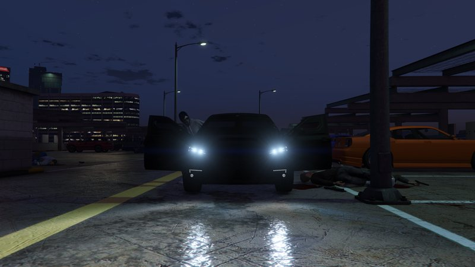
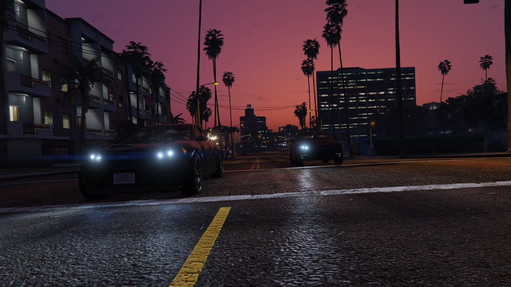

Kuruma
Robo del Kuruma blindado. El equipo asalta el aparcamiento de Del Perro para llevarse el coche de huida del golpe y escapar de la banda de Kkangpae.

«En vez de conseguir uno legalmente y dejar un rastro hasta tu puerta, vas a quitárselo a una desagradable banda coreana y dejar el rastro hasta la suya.»
Descripción
Lester ha localizado un Kuruma blindado en un aparcamiento de varias plantas de Del Perro, justo enfrente de Backlot City y encima del túnel de la autopista de Del Perro. El vehículo está custodiado por la Kkangpae, una organización criminal surcoreana, así que no se lo van a poner fácil.
El equipo llega al aparcamiento, se pone las máscaras para no llamar la atención y sube hasta la última planta. Allí encuentra el Kuruma entre dos camiones, rodeado de matones. Hay que limpiar la zona y llevarse el coche sin destruirlo.
La salida solo es posible por la entrada principal: el salto desde la azotea está bloqueado. Al bajar, más miembros de la Kkangpae emboscarán al equipo en Fugitives y Feltzers. La persecución continúa por la ciudad hasta la fábrica de Lester, donde Paige se hace cargo del vehículo.

Desarrollo de la misión
- Llega al aparcamiento de varias plantas de Del Perro.
- Ponte la máscara y sube hasta la última planta.
- Elimina a los miembros de la Kkangpae que custodian el Kuruma.
- Sube al Kuruma blindado y sal por la entrada principal.
- Esquiva o elimina a los perseguidores y entrega el coche en la fábrica de Lester.
Roles
Conductor
Kuruma blindado- Toma el Kuruma en cuanto la zona esté despejada.
- Sal por la entrada principal, no por la azotea.
- Mantén la velocidad y sigue el GPS hasta la fábrica.
Apoyo
Cobertura- Cubre al conductor desde el asiento del copiloto.
- Neutraliza a los Fugitives y Feltzers que persiguen.
- Evita explosivos cerca del Kuruma.
Requisitos
- Haber completado la preparatoria Scope Out.
- Equipo de 2 jugadores.
- Llevar armas automáticas y munición suficiente.
- Usar máscaras para mantener un perfil bajo al entrar.
Objetivos
- Roba el Kuruma.
- Entrega el Kuruma en la fábrica de Lester (conductor).
- Ayuda a entregar el Kuruma en la fábrica (segundo jugador).
Consejos
- Sube con cuidado: hay enemigos apostados en las rampas del aparcamiento.
- Usa las columnas como cobertura y limpia la última planta antes de acercarte al coche.
- No uses explosivos junto al Kuruma: si lo destruyes, la misión falla.
- Sal por la entrada principal; el salto desde la azotea está bloqueado.
- El daño al vehículo reduce la paga, aunque se repara al empezar el siguiente paso.
- En la huida, prioriza eliminar a los conductores que te embisten.
Condiciones de fallo
- Que el Kuruma sea destruido.
- Quedarse sin vidas.
- Que un jugador abandone la misión.
Fuente: GTA Wiki. Capturas: GTA Wiki / Rockstar Games. Los pagos pueden variar según dificultad y bonificaciones semanales.